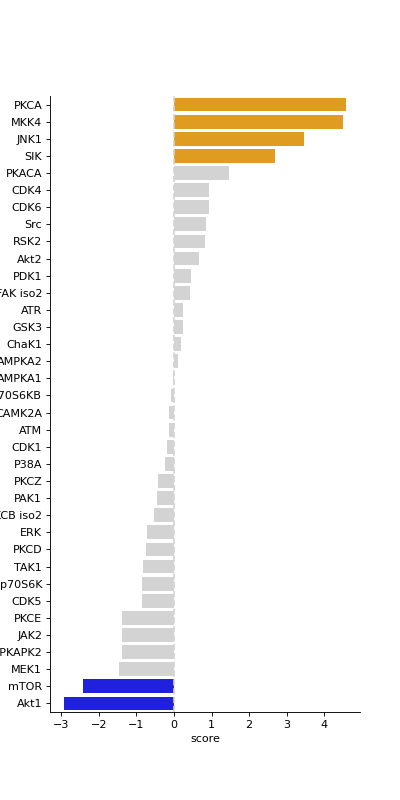
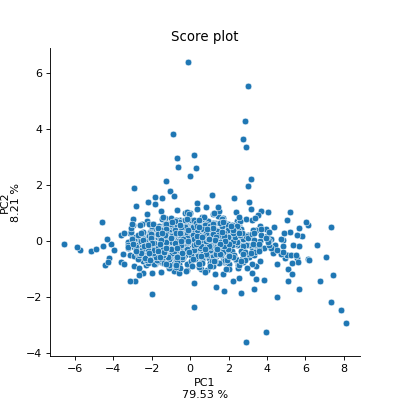
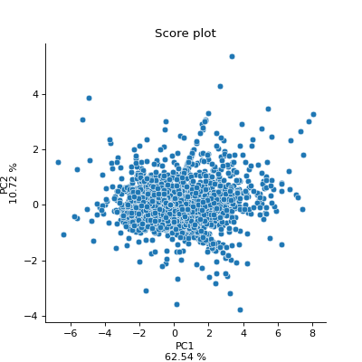
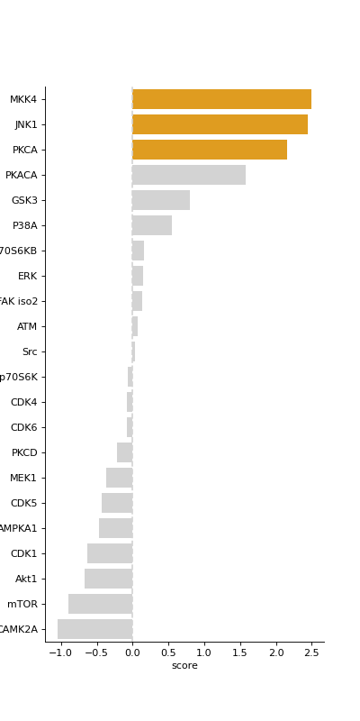
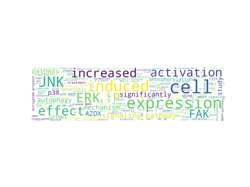
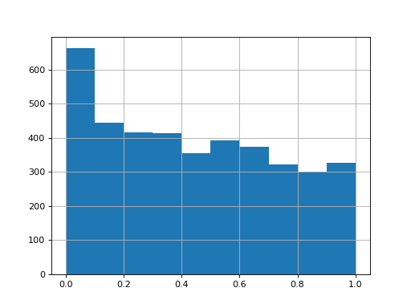
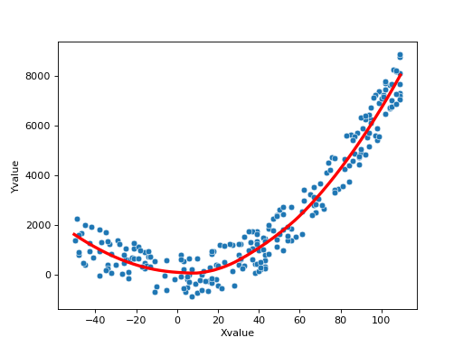
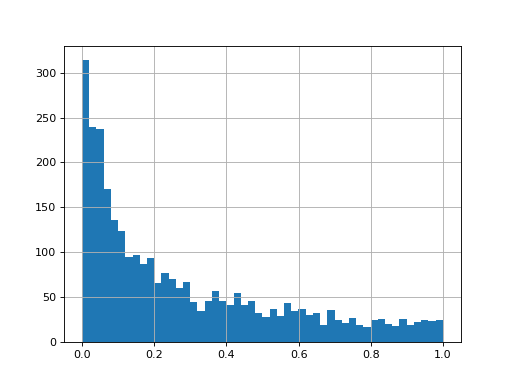
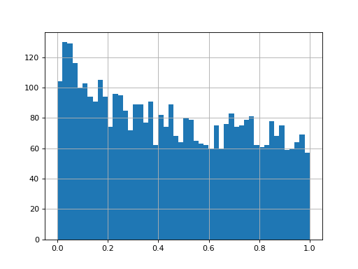

Analysis¶
The analysis submodule contains handy functions for the further analysis of your data. Functions include basic statistical tests, clustering and dimension reduction algorithms.
Autoprot Analysis Functions.
@author: Wignand
@documentation: Julian
- class autoprot.analysis.KSEA(data)[source]¶
Perform kinase substrate enrichment analysis.
Notes
KSEA uses the Kinase-substrate dataset and the regulatory-sites dataset from https://www.phosphosite.org/staticDownloads
Examples
KSEA is a method to get insights on which kinases are active in a given phosphoproteomic dataset. This is a great method to gain deeper insights on the underlying signaling mechanisms and also to generate novel hypothesis and find new connections in signaling processes. The KSEA class allows you to easily perform the analysis and comes with helpful functions to visualize and interpret your results.
In the first step of the analysis you have to generate a KSEA object.
>>> ksea = autoprot.analysis.KSEA(phos)
Next, you can annotate the data with respective kinases. You can provide the function with a organism of your choice as well as toggle whether or not to screen for only in vivo determined substrate phosphorylation of the respective kinases.
>>> ksea.annotate(organism="mouse", onlyInVivo=True)
After the annotation it is always a good idea to get an overview of the kinases in the data an how many substrates the have. Based on this you might want to adjust a cutoff specifying the minimum number of substrates per kinase.
>>> ksea.getKinaseOverview(kois=["Akt1","MKK4", "P38A", "Erk1"])
Next, you can perform the actual kinase substrate enrichment analysis. The analysis is based on the log fold change of your data. Therefore, you have to provide the function with the appropiate column of your data and the minimum number of substrates per kinase.
>>> ksea.ksea(col="logFC_TvC", minSubs=5)
After the ksea has finished, you can get information for further analysis such as the substrates of a specific kinase (or a list of kinases)
>>> ksea.returnKinaseSubstrate(kinase=["Akt1", "MKK4"]).sample()
or a new dataframe with additional columns for every kinase showing if the protein is a substrate of that kinase or not
>>> ksea.annotateDf(kinases=["Akt1", "MKK4"]).iloc[:2,-5:]
Eventually, you can also generate plots of the enrichment analysis.
>>> ksea.plotEnrichment(up_col="salmon", ... bg_col="pink", ... down_col="hotpink")
You can also highlight a list of kinases in volcano plots. This is based on the autoprot volcano function. You can pass all the common parameters to this function.
>>> ksea.volcanos(logFC="logFC_TvC", p="pValue_TvC", kinases=["Akt1", "MKK4"], ... annot="Gene names", sig_col="gray")
Sometimes the enrichment is crowded by various kinase isoforms. In such cases it makes sense to simplify the annotation by grouping those isoforms together.
>>> simplify = {"ERK":["ERK1","ERK2"], ... "GSK3":["GSK3A", "GSK3B"]} >>> ksea.ksea(col="logFC_TvC", minSubs=5, simplify=simplify) >>> ksea.plotEnrichment()
(Source code, png, hires.png, pdf)
Of course you can also get the ksea results as a dataframe to save or to further customize.
>>> ksea.returnEnrichment()
Of course is the database not exhaustive and you might want to add additional substrates manually. This can be done the following way. Manually added substrates are always added irrespective of the species used for the annotation.
>>> ksea = ana.KSEA(phos) >>> genes = ["RPGR"] >>> modRsds = ["S564"] >>> kinases = ["mTOR"] >>> ksea.addSubstrate(kinase=kinases, substrate=genes, subModRsd=modRsds)
>>> ksea.annotate(organism="mouse", onlyInVivo=True) >>> ksea.ksea(col="logFC_TvC", minSubs=5) >>> ksea.plotEnrichment(plotBg=False)
>>> ksea.removeManualSubs() >>> ksea.annotate(organism="mouse", onlyInVivo=True) >>> ksea.ksea(col="logFC_TvC", minSubs=5) >>> ksea.plotEnrichment(plotBg=False)
- addSubstrate(kinase, substrate, subModRsd)[source]¶
Manually add a substrate to the database.
- Parameters
kinase (list of str) – Name of the kinase e.g. PAK2.
substrate (list of str) – Name of the substrate e.g. Prkd1.
subModRsd (list of str) – Phosphorylated residues e.g. S203.
- Raises
ValueError – If the three provided lists do not match in length.
- Return type
None.
- annotate(organism='human', onlyInVivo=False)[source]¶
Annotate with known kinase substrate pairs.
- Parameters
organism (str, optional) – The target organism. The default is “human”.
onlyInVivo (bool, optional) – Whether to restrict analysis to in vivo evidence. The default is False.
Notes
Manually added kinases will be included in the annotation search independent of the setting of organism and onInVivo.
- Return type
None.
- annotateDf(kinases=[])[source]¶
Annotate the provided dataframe with boolean columns for given kinases.
- Parameters
kinases (list of str, optional) – List of kinases. The default is [].
- Returns
annotated dataframe containing a column for each provided kinase with boolean values representing a row/protein being a kinase substrate or not.
- Return type
pd.DataFrame
- getKinaseOverview(kois=None)[source]¶
Plot a graphical overview of the kinases acting on the proteins in the dataset.
- Parameters
kois (list of str, optional) – Kinases of interest for which a detailed overview of substrate numbers is plotted. The default is None.
- Return type
None.
- ksea(col, minSubs=5, simplify=None)[source]¶
Calculate Kinase Enrichment Score.
- Parameters
col (str) – Column used for the analysis containing the kinase substrate enrichments.
minSubs (int, optional) – Minumum number of substrates a kinase must have to be considered. The default is 5.
simplify (None, "auto" or dict, optional) – Merge multiple kinases during analysis. Using “auto” a predefined set of kinase isoforms is merged. If provided with a dict, the dict has to contain a list of kinases to merge as values and the name of the merged kinases as key. The default is None.
Notes
The enrichment score is calculated as
\[\frac{(\langle FC_{kinase} \rangle - \langle FC_{all} \rangle)\sqrt{N_{all}}}{\sigma_{all}}\]i.e. the difference in mean fold change between kinase and all substrates multiplied by the square root of number of kinase substrates and divided by the standard deviation of the fold change of all substrates.
- Return type
None.
- plotEnrichment(up_col='orange', down_col='blue', bg_col='lightgray', plotBg=True, ret=False, title='', figsize=(5, 10))[source]¶
Plot the KSEA results.
- Parameters
up_col (str, optional) – Color for enriched/upregulated kinases. The default is “orange”.
down_col (str, optional) – Colour for deriched/downregulated kinases. The default is “blue”.
bg_col (str, optional) – Colour for not kinases that did not change significantly. The default is “lightgray”.
plotBg (bool, optional) – Whether or not to plot the unaffected kinases. The default is True.
ret (bool, optional) – Whether to return the figure object. The default is False.
title (str, optional) – Title of the figure. The default is “”.
figsize (tuple of int, optional) – Figure size. The default is (5,10).
- Returns
fig – Only returned in ret is True.
- Return type
matplotlib figure.
- returnKinaseSubstrate(kinase)[source]¶
Return new dataframe with substrates of one or multiple kinase(s).
- Parameters
kinase (str or list of str) – Kinase(s) to analyse.
- Raises
ValueError – If kinase is neither list of str nor str.
- Returns
dfFilter – Dataframe containing detailed information on kinase-substrate pairs including reference literature.
- Return type
pd.Dataframe
- volcanos(logFC, p, kinases=[], **kwargs)[source]¶
Plot volcano plots highlighting substrates of a given kinase.
- Parameters
logFC (str) – Colname of column containing the log fold changes. Must be present in the dataframe KSEA was initialised with.
p (str) – Colname of column containing the p values. Must be present in the dataframe KSEA was initialised with.
kinases (list of str, optional) – Limit the analysis to these kinases. The default is [].
**kwargs – passed to autoprot.visualisation.volcano.
- Return type
None.
{kind=link}
{kind=link}
{kind=link}
{kind=link}
{kind=link}
{kind=link}
{kind=link}
{kind=link}
{kind=link}
{kind=link}
- autoprot.analysis.adjustP(df, pCol, method='fdr_bh')[source]¶
Use statsmodels.multitest on dataframes.
Note: when nan in p-value this function will return only nan.
- Parameters
df (pd.DataFrame) – Input dataframe.
pCol (str) – column containing p-values for correction.
method (str, optional) – ‘b’: ‘Bonferroni’, ‘s’: ‘Sidak’, ‘h’: ‘Holm’, ‘hs’: ‘Holm-Sidak’, ‘sh’: ‘Simes-Hochberg’, ‘ho’: ‘Hommel’, ‘fdr_bh’: ‘FDR Benjamini-Hochberg’, ‘fdr_by’: ‘FDR Benjamini-Yekutieli’, ‘fdr_tsbh’: ‘FDR 2-stage Benjamini-Hochberg’, ‘fdr_tsbky’: ‘FDR 2-stage Benjamini-Krieger-Yekutieli’, ‘fdr_gbs’: ‘FDR adaptive Gavrilov-Benjamini-Sarkar’ The default is “fdr_bh”.
- Returns
df – The input dataframe with adjusted p-values. The dataframe will have a column named “adj.{pCol}”
- Return type
pd.DataFrame
Examples
>>> twitchVsmild = ['log2_Ratio H/M normalized BC18_1','log2_Ratio M/L normalized BC18_2','log2_Ratio H/M normalized BC18_3', ... 'log2_Ratio H/L normalized BC36_1','log2_Ratio H/M normalized BC36_2','log2_Ratio M/L normalized BC36_2'] >>> prot = pd.read_csv("_static/testdata/proteinGroups.zip", sep='\t', low_memory=False) >>> protRatio = prot.filter(regex="Ratio .\/. normalized") >>> protLog = pp.log(prot, protRatio, base=2) >>> prot_tt = ana.ttest(df=protLog, reps=twitchVsmild, cond="TvM", mean=True, adjustPVals=False) >>> prot_tt_adj = ana.adjustP(prot_tt, pCol="pValue_TvM") >>> prot_tt_adj.filter(regex='pValue').head() pValue_TvM adj.pValue_TvM 0 NaN NaN 1 0.947334 0.966514 2 NaN NaN 3 NaN NaN 4 0.031292 0.206977
- autoprot.analysis.annotatePS(df, ps, colsToKeep=[])[source]¶
Annotate phosphosites with information derived from PhosphositePlus.
- Parameters
df (pd.Dataframe) – dataframe containing PS of interst.
ps (str) – Column containing info about the PS. Format: GeneName_AminoacidPositoin (e.g. AKT_T308).
colsToKeep (list of str, optional) – Which columns from original dataframe (input df) to keep in output. The default is [].
- Returns
The input dataframe with the kept columns and additional phosphosite cols.
- Return type
pd.Dataframe
- class autoprot.analysis.autoPCA(X, rlabels, clabels, batch=None)[source]¶
Conduct principal component analyses.
The class encompasses a set of helpful visualizations for further investigating the results of the PCA It needs the matrix on which the PCA is performed as well as row labels (rlabels) and column labels (clabels) corresponding to the provided matrix.
Notes
PCA is a method which allows you to visually investigate the underlying structure in your data after reduction of the dimensionality. With the .autoPCA() you can easily perform a PCA and also generate exploratory figures. Intro to PCA: https://learnche.org/pid/latent-variable-modelling/principal-component-analysis/index
Examples
for PCA no missing values are allowed filter those and store complete dataframe
>>> temp = prot[~prot.filter(regex="log2.*norm").isnull().any(1)]
get the matrix of quantitative values corresponding to conditions of interest Here we only use the first replicate for clarity
>>> X = temp.filter(regex="log2.*norm.*_1$")
generate appropiate names for the columns and rows of the matrix for example here the columns represent the conditions and we are not interested in the rows (which are the genes)
>>> clabels = X.columns >>> rlabels = np.nan
generate autopca object
>>> autopca = autoprot.analysis.autoPCA(X, rlabels, clabels)
The scree plots describe how much of the total variance of the dataset is explained ba the first n components. As you want to explain as variance as possible with as little variables as possible, chosing the number of components directly right to the steep descend of the plot is usually a good idea.
>>> autopca.scree()
(Source code, png, hires.png, pdf)
The corrComp heatmap shows the PCA loads (i.e. how much a principal component is influenced by a change in that variable) relative to the variables (i.e. the experiment conditions). If a weight (colorbar) is close to zero, the corresponding PC is barely influenced by it.
>>> autopca.corrComp(annot=False)
(Source code, png, hires.png, pdf)
The bar loading plot is a different way to represent the weights/loads for each condition and principle component. High values indicate a high influence of the variable/condition on the PC.
>>> autopca.barLoad(1) >>> autopca.barLoad(2)
The score plot shows how the different data points (i.e. proteins) are positioned with respect to two principal components. In more detail, the scores are the original data values multiplied by the weights of each value for each principal component. Usually they will separate more in the direction of PC1 as this component explains the largest share of the data variance
>>> autopca.scorePlot(pc1=1, pc2=2)
(Source code, png, hires.png, pdf)
The loading plot is the 2D representation of the barLoading plots and shows the weights how each variable influences the two PCs.
>>> autopca.loadingPlot(pc1=1, pc2=2, labeling=True)
(Source code, png, hires.png, pdf)

The Biplot is a combination of loading plot and score plot as it shows the scores for each protein as point and the weights for each variable as vectors. >>> autopca.biPlot(pc1=1, pc2=2)
(Source code, png, hires.png, pdf)
- barLoad(pc=1, n=25)[source]¶
Plot the loadings of a given component in a barplot.
- Parameters
pc (int, optional) – Component to draw. The default is 1.
n (int, optional) – Plot only the n first rows. The default is 25.
- Return type
None.
- biPlot(pc1=1, pc2=2, numLoad='all', figsize=(5, 5), **kwargs)[source]¶
Generate a biplot, a combined loadings and score plot.
- Parameters
pc1 (int, optional) – Number of the first PC to plot. The default is 1.
pc2 (int, optional) – Number of the second PC to plot. The default is 2.
numLoad (int, optional) – Plot only the n first rows. The default is “all”.
figsize (tuple of int, optional) – Figure size. The default is (3,3).
**kwargs – Passed to plt.scatter.
Notes
In the biplot, scores are shown as points and loadings as vectors.
- Return type
None.
- corrComp(annot=False)[source]¶
Plot heatmap of PCA weights vs. variables.
- Parameters
annot (bool, optional) – If True, write the data value in each cell. If an array-like with the same shape as data, then use this to annotate the heatmap instead of the data. Note that DataFrames will match on position, not index. The default is False.
Notes
2D representation how strong each observation (e.g. log protein ratio) weights for each principal component.
- Return type
None.
- loadingPlot(pc1=1, pc2=2, labeling=False, figsize=(5, 5))[source]¶
Generate a PCA loading plot.
- Parameters
pc1 (int, optional) – Number of the first PC to plot. The default is 1.
pc2 (int, optional) – Number of the second PC to plot. The default is 2.
labeling (bool, optional) – If True, points are labelled with the corresponding column labels. The default is False.
figsize (tuple of int, optional) – The size of the figure object. The default is (5,5).
Notes
This will return a scatterplot with as many points as there are components (i.e. conditions) in the dataset. For each component a load magnitude for two PCs will be printedd that describes how much each condition influences the magnitude of the respective PC.
- Return type
None.
- pairPlot(n=0)[source]¶
Draw a pair plot of for pca for the given number of dimensions.
- Parameters
n (int, optional) – Plot only the n first rows. The default is 0.
Notes
Be careful for large data this might crash you PC -> better specify n!
- Return type
None.
- returnLoad(pc=1, n=25)[source]¶
Return the load for a given principal component.
- Parameters
pc (int, optional) – Component to draw. The default is 1.
n (int, optional) – Plot only the n first rows. The default is 25.
- Returns
Dataframe containing load vs. condition.
- Return type
pd.DataFrame
- returnScore()[source]¶
Return a dataframe of all scorings for all principal components.
- Returns
scores – Dataframe holding the principal components as colnames and the scores for each protein on that PC as values.
- Return type
pd.DataFrame
- scorePlot(pc1=1, pc2=2, labeling=False, file=None, figsize=(5, 5))[source]¶
Generate a PCA score plot.
- Parameters
pc1 (int, optional) – Number of the first PC to plot. The default is 1.
pc2 (int, optional) – Number of the second PC to plot. The default is 2.
labeling (bool, optional) – If True, points are labelled with the corresponding column labels. The default is False.
file (str, optional) – Path to save the plot. The default is None.
figsize (tuple of int, optional) – Figure size. The default is (5,5).
Notes
This will return a scatterplot with as many points as there are entries (i.e. protein IDs). The scores for each PC are the original protein ratios multiplied with the loading weights. The score plot corresponds to the individual positions of of each protein on a hyperplane generated by the pc1 and pc2 vectors.
- Return type
None.
{kind=link}
{kind=link}
{kind=link}
{kind=link}
{kind=link}
{kind=link}
{kind=link}
{kind=link}
{kind=link}
{kind=link}
{kind=link}
{kind=link}
{kind=link}
{kind=link}
- autoprot.analysis.cohenD(df, group1, group2)[source]¶
Calculate Cohen’s d effect size for two groups.
- Parameters
df (pd.Dataframe) – Input dataframe.
group1 (str) – Colname for group1.
group2 (str) – Colname for group2.
- Returns
df – Input dataframe with a new column “cohenD”.
- Return type
pd.Dataframe
Notes
Cohen’s d is defined as the difference between two means divided by a standard deviation for the data. Note that the pooled standard deviation here is calculated differently than originally proposed by Cohen.
References
[1] Cohen, Jacob (1988). Statistical Power Analysis for the Behavioral Sciences. Routledge. [2] https://www.doi.org/10.22237/jmasm/1257035100
- autoprot.analysis.edm(A, B)[source]¶
Calculate an euclidean distance matrix between two matrices.
See: https://medium.com/swlh/euclidean-distance-matrix-4c3e1378d87f
- Parameters
A (np.ndarray) – Matrix 1.
B (np.ndarray) – Matrix 2.
- Returns
Distance matrix.
- Return type
np.ndarray
- autoprot.analysis.getPubAbstracts(text=[''], ToA=[''], author=[''], phrase=[''], exclusion=[''], customSearchTerm=None, makeWordCloud=False, sort='pub+date', retmax=20, output='print')[source]¶
Get Pubmed abstracts.
Notes
Provide the search terms and pubmed will be searched for paper matching those The exclusion list can be used to exclude certain words to be contained in a paper If you want to perform more complicated searches use the possibility of using a custom term.
If you search for a not excact term you can use * For example opto* will also return optogenetic.
- Parameters
text (list of str, optional) – List of words which must occur in text. The default is [“”].
ToA (list of str, optional) – List of words which must occur in Titel or Abstract. The default is [“”].
author (list of str, optional) – List of authors which must occor in Author list. The default is [“”].
phrase (list of str, optional) – List of phrases which should occur in text. Seperate word in phrases with hyphen (e.g. akt-signaling). The default is [“”].
exclusion (list of str, optional) – List of words which must not occur in text. The default is [“”].
customSearchTerm (str, optional) – Enter a custom search term (make use of advanced pubmed search functionality). If this is supplied all other search terms will be ignored. The default is None.
makeWordCloud (bool, optional) – Whether to draw a wordcloud of the words in retrieved abstrace. The default is False.
sort (str, optional) – How to sort the results. The default is ‘pub+date’.
retmax (int, optional) – Maximum number of found articles to return. The default is 20.
output (str, optional) – How to handle the output. Possible values are ‘SOMEPATH.txt’, ‘SOMEPATH.html’ or ‘SOMEPATH’. If no extension is given, the output will be html. The default is “print”.
- Return type
None.
Examples
To generate a wordcloud and print the results of the found articles to the prompt use the following command
>>> autoprot.analysis.getPubAbstracts(ToA=["p38", "JNK", "ERK"], makeWordCloud=True)
(Source code, png, hires.png, pdf)
Even more comfortably, you can also save the results incl. the wordcloud as html file
>>> autoprot.analysis.getPubAbstracts(ToA=["p38", "JNK", "ERK"], makeWordCloud=True, output='./MyPubmedSearch.html')
{kind=link}
{kind=link}
- autoprot.analysis.goAnalysis(geneList, organism='hsapiens')[source]¶
Perform go Enrichment analysis (also KEGG and REAC).
- Parameters
geneList (list of str) – list of gene names.
organism (str, optional) – identifier for the organism. See https://biit.cs.ut.ee/gprofiler/page/organism-list for details. The default is “hsapiens”.
- Raises
ValueError – If the input could not be parsed as list of gene names.
- Returns
Dataframe-like object with the GO annotations.
- Return type
gp.profile
Examples
>>> autoprot.analysis.goAnalysis(['PEX14', 'PEX18']).iloc[:3,:3] ... source native name ... 0 CORUM CORUM:1984 PEX14 homodimer complex ... 1 GO:CC GO:1990429 peroxisomal importomer complex ... 2 GO:BP GO:0036250 peroxisome transport along microtubule
- autoprot.analysis.limma(df, reps, cond='', customDesign=None)[source]¶
Perform moderated ttest as implemented from R LIMMA.
- Parameters
df (pd.DataFrame) – Input dataframe.
reps (list of lists of str) – Column names of the replicates. Common replicates are grouped together in a single list.
cond (str, optional) – Term to append to the newly generated colnames. The default is “”.
customDesign (str, optional) – Path to custom design file. The default is None.
- Returns
df – The input dataframe with additional columns.
- Return type
pd.DataFrame
Notes
A custom design representing the design matrix of the microarray experiment, with rows corresponding to arrays and columns to coefficients to be estimated can be provided using customDesign. If customDesign is the unit vector meaning that the arrays are treated as replicates. See: https://www.rdocumentation.org/packages/limma/versions/3.28.14/topics/lmFit
Examples
>>> df = pd.DataFrame({"a1":np.random.normal(loc=0, size=4000), ... "a2":np.random.normal(loc=0, size=4000), ... "a3":np.random.normal(loc=0, size=4000), ... "b1":np.random.normal(loc=0.5, size=4000), ... "b2":np.random.normal(loc=0.5, size=4000), ... "b3":np.random.normal(loc=0.5, size=4000),}) >>> testRes = ana.limma(df, reps=[["a1","a2", "a3"],["b1","b2", "b3"]], cond="_test") >>> testRes["P.Value_test"].hist()
(Source code, png, hires.png, pdf)

{kind=link}
{kind=link}
- autoprot.analysis.loess(data, xvals, yvals, alpha, poly_degree=2)[source]¶
Calculate a LOcally-Weighted Scatterplot Smoothing Fit.
See: https://medium.com/@langen.mu/creating-powerfull-lowess-graphs-in-python-e0ea7a30b17a
- Parameters
data (pd.Dataframe) – Input dataframe.
xvals (str) – Colname of x values.
yvals (str) – Colname of y values.
alpha (float) – Sensitivity of the estimation. Controls how much of the total number of values is used during weighing. 0 <= alpha <= 1.
poly_degree (int, optional) – Degree of the fitted polynomial. The default is 2.
- Return type
None.
Notes
Loess normalisation (also referred to as Savitzky-Golay filter) locally approximates the data around every point using low-order functions and giving less weight to distant data points.
Examples
>>> np.random.seed(10) >>> x_values = np.random.randint(-50,110,size=(250)) >>> y_values = np.square(x_values)/1.5 + np.random.randint(-1000,1000, size=len(x_values)) >>> df = pd.DataFrame({"Xvalue" : x_values, "Yvalue" : y_values })
>>> evalDF = autoprot.analysis.loess(df, "Xvalue", "Yvalue", alpha=0.7, poly_degree=2) >>> fig, ax = plt.subplots(1,1) >>> sns.scatterplot(df["Xvalue"], df["Yvalue"], ax=ax) >>> ax.plot(evalDF['v'], evalDF['g'], color='red', linewidth= 3, label="Test")
(Source code, png, hires.png, pdf)

{kind=link}
{kind=link}
- autoprot.analysis.makePSM(seq, seqLen)[source]¶
Generate a position score matrix for a set of sequences.
Returns the percentage of each amino acid for each position that can be further normalized using a PSM of unrelated/background sequences.
- Parameters
seq (list of str) – list of sequences.
seqLen (int) – Length of the peptide sequences. Must match to the list provided.
- Returns
Dataframe holding the prevalence for every amino acid per position in the input sequences.
- Return type
pd.Dataframe
Examples
>>> autoprot.analysis.makePSM(['PEPTIDE', 'PEGTIDE', 'GGGGGGG'], 7) ... 0 1 2 3 4 5 6 ... G 0.333333 0.333333 0.666667 0.333333 0.333333 0.333333 0.333333 ... P 0.666667 0.000000 0.333333 0.000000 0.000000 0.000000 0.000000 ... A 0.000000 0.000000 0.000000 0.000000 0.000000 0.000000 0.000000 ... V 0.000000 0.000000 0.000000 0.000000 0.000000 0.000000 0.000000 ... L 0.000000 0.000000 0.000000 0.000000 0.000000 0.000000 0.000000 ... I 0.000000 0.000000 0.000000 0.000000 0.666667 0.000000 0.000000 ... M 0.000000 0.000000 0.000000 0.000000 0.000000 0.000000 0.000000 ... C 0.000000 0.000000 0.000000 0.000000 0.000000 0.000000 0.000000 ... F 0.000000 0.000000 0.000000 0.000000 0.000000 0.000000 0.000000 ... Y 0.000000 0.000000 0.000000 0.000000 0.000000 0.000000 0.000000 ... W 0.000000 0.000000 0.000000 0.000000 0.000000 0.000000 0.000000 ... H 0.000000 0.000000 0.000000 0.000000 0.000000 0.000000 0.000000 ... K 0.000000 0.000000 0.000000 0.000000 0.000000 0.000000 0.000000 ... R 0.000000 0.000000 0.000000 0.000000 0.000000 0.000000 0.000000 ... Q 0.000000 0.000000 0.000000 0.000000 0.000000 0.000000 0.000000 ... N 0.000000 0.000000 0.000000 0.000000 0.000000 0.000000 0.000000 ... E 0.000000 0.666667 0.000000 0.000000 0.000000 0.000000 0.666667 ... D 0.000000 0.000000 0.000000 0.000000 0.000000 0.666667 0.000000 ... S 0.000000 0.000000 0.000000 0.000000 0.000000 0.000000 0.000000 ... T 0.000000 0.000000 0.000000 0.666667 0.000000 0.000000 0.000000
- autoprot.analysis.missAnalysis(df, cols, n=None, sort='ascending', text=True, vis=True, extraVis=False, saveDir=None)[source]¶
Print missing statistics for a dataframe.
- Parameters
df (pd.Dataframe) – Input dataframe with missing values.
cols (list of str) – Columns to perform missing values analysis on.
n (int, optional) – How many rows of the dataframe to displayed. The default is 999.
sort (str, optional) – “ascending” or “descending”. The default is ‘ascending’.
text (bool, optional) – Whether to output text summaryMap. The default is True.
vis (bool, optional) – whether to return barplot showing missingness. The default is True.
extraVis (bool, optional) – Whether to return matrix plot showing missingness. The default is False.
saveDir (str, optional) – Path to folder where the results should be saved. The default is None.
- Raises
ValueError – If n is incorrectly specified.
- Return type
None.
Examples
miss_analysis gives a quick overview of the missingness of the provided dataframe. You can provide the complete or prefiltered dataframe as input. Providing n allows you to specify how many of the entries of the dataframe (sorted by missingness) are displayed (i.e. only display the n columns with most (or least) missing values) With the sort argument you can define whether the dataframe is sorted by least to most missing values or vice versa (using “descending” and “ascending”, respectively). The vis and extra_vis arguments can be used to toggle the graphical output. In case of large data (a lot of columns) those might be better turned off.
>>> autoprot.analysis.missAnalysis(phos_expanded, ... twitchVsctrl+twitchVsmild+mildVsctrl, ... sort="descending", ... extraVis = True)
{kind=link}
{kind=link}
{kind=link}
{kind=link}
- autoprot.analysis.rankProd(df, reps, cond='')[source]¶
Perform RankProd test as in R RankProd package.
At the moment one sample test only. Test for up and downregulated genes separatly therefore returns two p values.
- Parameters
df (pd.DataFrame) – Input dataframe.
reps (list of lists of str) – Column names of the replicates. Common replicates are grouped together in a single list.
cond (str, optional) – Term to append to the newly generated colnames. The default is “”.
- Returns
df – Input dataframe with additional columns from RankProd.
- Return type
pd.DataFrame
- autoprot.analysis.ttest(df, reps, cond='', mean=True, adjustPVals=True, alternative='two-sided')[source]¶
Perform one or two sample ttest.
- Parameters
df (pd.DataFrame) – Input dataframe.
reps (list of str or list of lists of str) – The replicates to be included in the statistical test. Either a list of the replicates or a list containing two list with the respective replicates.
cond (str, optional) – The name of the condition. This is used for naming the returned results. The default is “”.
mean (bool, optional) – Whether to calculate the logFC of the provided data. For the one sample ttest log2 transformed ratios are expected. For the two sample ttest log transformed intensities are expected. If mean=True for two sample ttest, the log2 ratio of the provided replicates will be calculated. The default is True.
adjustPVals (bool, optional) – Whether to adjust P-values. The default is True.
alternative ({'two-sided', 'less', 'greater'}, optional) –
Defines the alternative hypothesis. The following options are available (default is ‘two-sided’):
’two-sided’: the mean of the underlying distribution of the sample is different than the given population mean (popmean)
’less’: the mean of the underlying distribution of the sample is less than the given population mean (popmean)
’greater’: the mean of the underlying distribution of the sample is greater than the given population mean (popmean)
- Returns
df – Input dataframe with additional cols.
- Return type
pd.DataFrame
Examples
>>> twitchVsmild = ['log2_Ratio H/M normalized BC18_1','log2_Ratio M/L normalized BC18_2','log2_Ratio H/M normalized BC18_3', ... 'log2_Ratio H/L normalized BC36_1','log2_Ratio H/M normalized BC36_2','log2_Ratio M/L normalized BC36_2'] >>> protRatio = prot.filter(regex="Ratio .\/. normalized") >>> protLog = autoprot.preprocessing.log(prot, protRatio, base=2) >>> prot_tt = autoprot.analysis.ttest(df=protLog, reps=twitchVsmild, cond="TvM", mean=True, adjustPVals=True) >>> prot_tt["pValue_TvM"].hist(bins=50) >>> plt.show()
(Source code, png, hires.png, pdf)
>>> df = pd.DataFrame({"a1":np.random.normal(loc=0, size=4000), ... "a2":np.random.normal(loc=0, size=4000), ... "a3":np.random.normal(loc=0, size=4000), ... "b1":np.random.normal(loc=0.5, size=4000), ... "b2":np.random.normal(loc=0.5, size=4000), ... "b3":np.random.normal(loc=0.5, size=4000),}) >>> autoprot.analysis.ttest(df=df, reps=[["a1","a2", "a3"],["b1","b2", "b3"]])["pValue_"].hist(bins=50) >>> plt.show()
(Source code, png, hires.png, pdf)

{kind=link}
{kind=link}
{kind=link}
{kind=link}